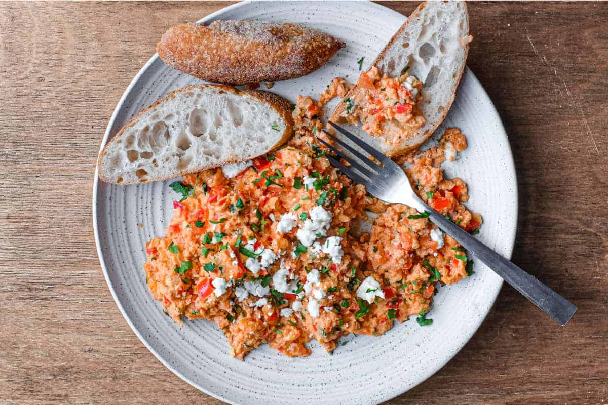

This popular Greek dish, which goes under the name strapatsada or kagianas, consists of diced, sautéed tomatoes that are seasoned with fresh herbs, then combined with lightly beaten eggs and topped with crumbled feta cheese. With its rustic appeal and clean, refreshing flavors, it is mainly enjoyed as a side to various roasts or grilled meat.
Meal prep time : 20 minutes
Servings : 3